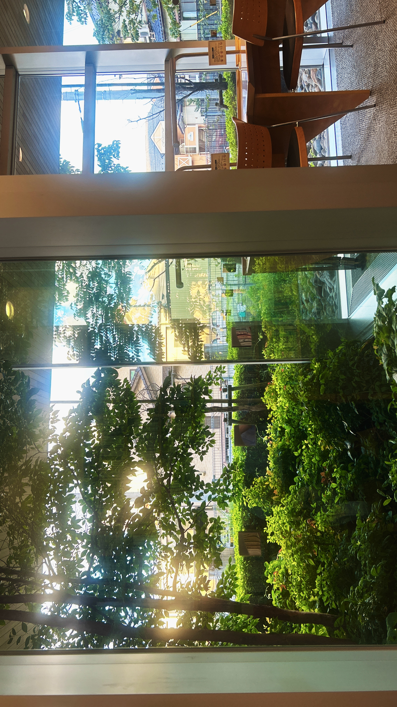
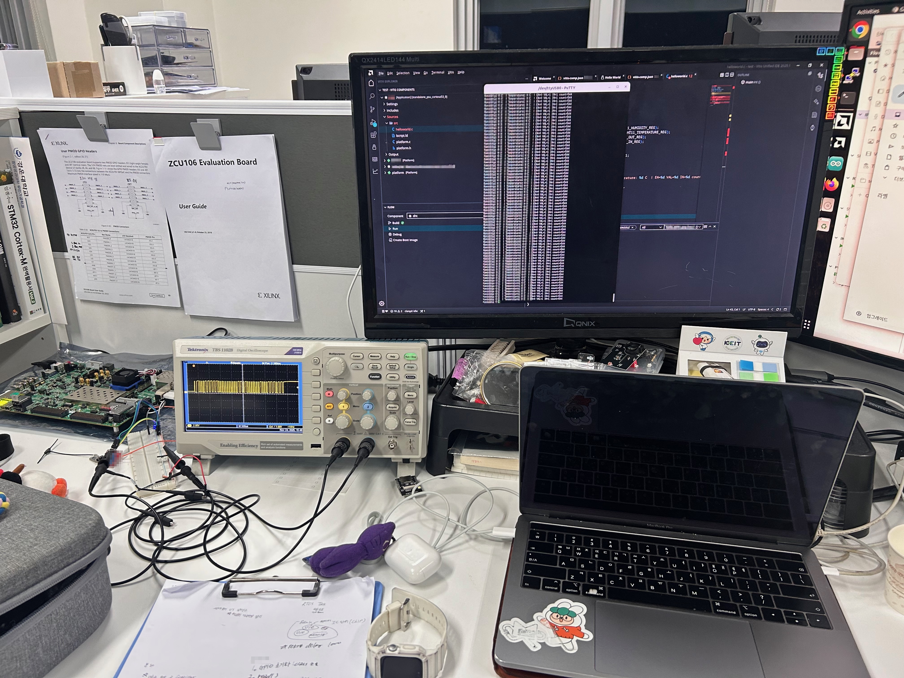
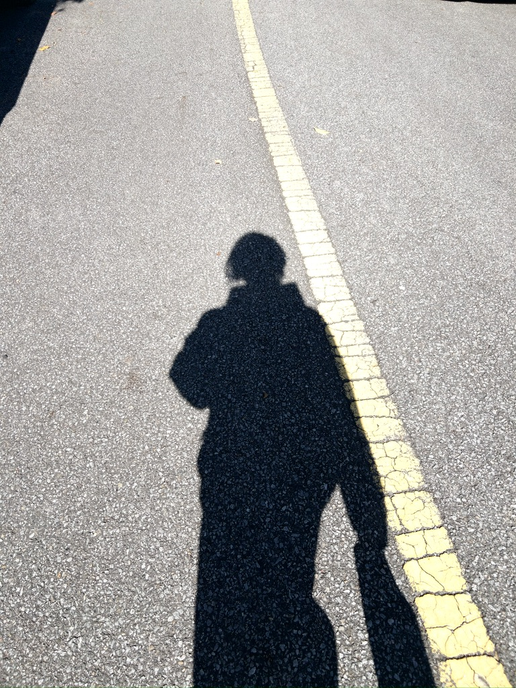
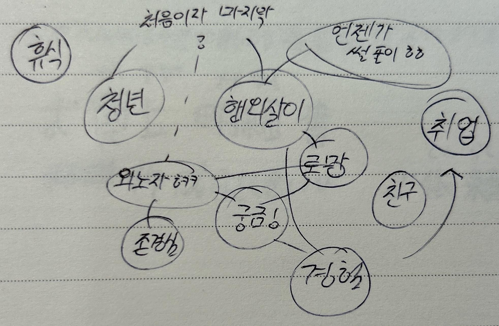

2026-08-08
일본으로의 여정
모두가 취업 준비, 스펙 쌓기를 하고 있을 때 나는 홀로 당연하지 않은 길을 선택했다.
워킹홀리데이...
그냥 취업을 하게 되었다면, 나도 지금의 나를 이렇게 생각했을 것 같다.
도피, 허황된 꿈。
부정 하지는 않는다, 변명을 늘어뜨리고 싶지도 않고.
많은 고민이 뒤따른 선택이었으니. 조금은 당당하게 써내려가고 싶은 이야기일뿐.

처음에는 계속 학생 연구원으로 다니던 회사에서 기존 연구개발을 이어가고 싶었고,
그대로 현재의 구성원으로, 커리어를 쌓아 나아가고 더 높은곳도 노려본다면 좋겠다고 생각하고 있었다.

그치만, 문득.. 아니 워홀을 결정하기 전 몇달 동안은 그런 생각이 들었다.
내가 뭐 떄문에 이렇게까지 열심히 하고 있는지, 또 내가 하고 싶은게 무엇이었는지..
누군가에게는 구태여 말하지는 않겠지만, 아니 말 못하겠지만...
몇몇 일을 겪으며, 깎여나간듯한 '나'라는 자신의 존재가치를 '일하는 나'에 투영시킨 듯 하였다.
정말 뭐 때문에 이렇게 살아가야 하는 것일까, 어차피 언제 어떻게 모든걸 잃고, 끝날지도 모르는게 인생인데...
라는 생각을 해보며..
'지금 당장의 존재 가치찾기'에 혈안이 되어있던 것 같았다.
그래서 그런지, 굳이 무리해가며 이런저런 일에 가담 하면서, 정작 나 자신의 시간은 가져본 적이 없던 것 같았다.
그냥.. 아무것도 하지 않으면 엄청 불안했던 것 같았달까..
가끔 동기들이랑 놀면서도 마음속으로는 '친구'랑 논다는 의식보다는 이것 조차도 '사회생활'로 생각을 했으니까,,
정작 나에게 정말 소중한 소꿉친구, 중•고등학교 친구들이랑 즐겁게 놀거나 어색하게 살갑게 굴었던 나 자신이.. 너무 싫었다.
뭐가 그렇게까지 불안해야 했을까.

아무튼 이런저런 고민끝에, 어차피 취업을 해도.. 제정신으로 다닐 것 같지도,
언젠가는 결국 '잠깐이라도 어디론가 떠나고 싶다'라는 마음을 못 버리고 결국 실행해 버릴 것 같으니
기회는 오히려 지금이라고 생각하였다.
퇴근하고 집에 도착하면 씻고, 누워서 잘때까지 계속 울기만 하는 생활을 1년가깝게 하던 나는 정상이었을까...
암울한 나의 마음을 뒤로하고, 본격적으로 내가 지금당장 떠날 수 있는 방법에는 무엇이 있을까? 
라는 생각으로 어학연수, 워킹홀리데이, 교환학생등 찾아보다가.. 마인드 맵을 그려보았다.
해외살이 + 외노자라는 타이틀, 그리고 청년.
억지일지는 모르겠으나, 그때 그렇게 조합하다보니, '워킹홀리데이'가 떠오른 것 같았다.
그리고 언제든 한국으로 돌아올 수 있는 곳, 어느정도 취업을 도전해볼 수 있는곳이 좋지 않을까?
라는 생각도 함께.
솔직히.. 워홀 생활중인 지금도 한국으로 돌아갔을 때의 취업으로 고민이긴 하다...
암튼.. 말이 길어질 것 같아, 우선 일본을 선택하게 된 계기를 적어보자면..
단순하다.
일단 먼저.. 듣기좋은 허물로... 내가 현지 언어를 잘하게 된다면, 현지 취업을 도전해볼 수 있지 않을까?
라는 생각과 동시에, 실제로 예전 독일 행사에서 관심이 엄청 들기도, 내가 어릴 때 생각했던 아이디어를 실현하고,
꾸준히 현재도 연구중인 내용들을 알려주셨던... 심지어 한국에서 대학원을 나오셨다는 연구원분의 이야기를 들어보았었는데,
이번 워홀을 통해서 혹시라도 기회가 된다면 그 기업(OG wellness)에 도전해보고 싶다는 생각도 있었다.
뭐、 어디까지나 워홀을 위한 변명같은 이야기 일뿐..
일단 도전 해보기로 마음을 먹어버렸다.